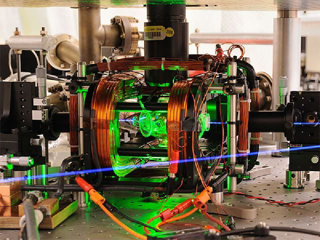
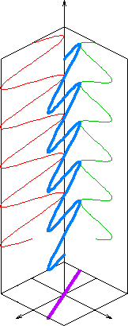
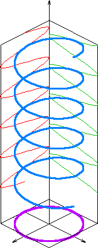
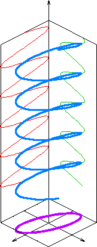

Квантовые каналы связи обычно используются для создания защищенного канала связи, предназначенного для передачи ключевой информации. В этих каналах информация передается с помощью отдельных фотонов специальными лазерами. Каналы бывают пространственными, в которых фотоны перемещаются в воздушной или космической среде и оптоволоконными. Первая демонстрация квантового распределения ключей была проведена в 1989 году в лабораторных условиях. Передача осуществлялась через воздушную среду и ее дальность составляла 30 сантиметров. В 1995 году удалось увеличить расстояние передачи до 23 км с использованием оптоволоконной линии связи. Оборудование одного из первых квантовых каналов приведено на рис. 6.12. В 2001 году дальность передачи составила 80 км, в 2005 году − 100 км и с использованием приемников, охлажденных до абсолютного нуля была получена дальность в 184 км. Первая коммерческая квантовая система передачи ключей была показана на выставке CeBIT-2002. «Система располагалась в двух 19-дюймовых блоках и могла работать без настройки сразу после подключения к персональному компьютеру. С его помощью была установлена двухсторонняя наземная и воздушная волоконно-оптическая связь между городами Женева и Лузанна, расстояние между которыми составляет 67 км [16]. Источником фотонов служил инфракрасный лазер с длиной волны 1550 нм. Скорость передачи данных была невысока, но для передачи ключа шифра (длина от 27,9 до 117,6 кбит) большая скорость и не требуется» [9]. Позднее к проектированию квантовых устройств передачи данных подключились инженеры из Toshiba, NEC, IBM, Hewlett Packard, Mitsubishi и др. По воздуху удавалось передать информацию на 23,4 км. Для передачи информации использовалась различная поляризация фотонов. На небольшое расстояние удавалось передавать сообщение со скоростью 250 Мбит/с и в следующем поколении квантовых каналов ожидаются скорости порядка 2,5 Гбит/с.
 |
Рис. 6.12. Оборудование для первых квантовых каналов |
Поляризация для электромагнитных волн это явление направленного колебания векторов напряженности электрического поля E или напряженности магнитного поля H.
Когерентное электромагнитное излучение может иметь:
• линейную поляризацию − в направлении, перпендикулярном направлению распространения волны;
• круговую поляризацию − правую либо левую, в зависимости от направления вращения вектора индукции;
• эллиптическую поляризацию − промежуточный случай между круговой и линейными поляризациями.
Иллюстрация различных видов поляризации приведена на рис. 6.13. В криптографии обычно используется линейная поляризация различной направленности, т. е. в квантовом канале информацией является направление поляризации фотонов. В таком канале невозможно перехватить информацию так как она переносится отдельными фотонами и попытка ее измерения изменяет состояние фотонов, что приводит к постоянным ошибкам канала связи. Для получения фотонов с нужной поляризацией используют поляризационные рещетки.
Развивается направление спутниковой квантовой криптографии. В этом случае фотоны должны проходить сквозь атмосферу без поглощения и изменения поляризации. Для предотвращения поглощения исследователи выбирают длину волны в 770 нм, соответствующую минимальному поглощению излучения молекулами атмосферы. Сигнал с большей длиной волны также слабо поглощается, но более подвержен турбулентности, которая вызывает изменение локального показателя преломления воздушной среды и, ввиду этого, изменение поляризации фотонов.
 |
 |
 |
Рис. 6.13. Квантовая поляризация: |
||
Сегодня удается передавать сообщения по квантовому каналу через воздушную среду на расстояние 2 км. Сигналы передавались горизонтально, вблизи поверхности Земли, где плотность воздуха и флуктуации максимальной интенсивности. Поэтому расстояния в 2 км вблизи поверхности Земли эквивалентны 300 км, отделяющим низкоорбитальный искусственный спутник от Земли.
Таким образом, менее чем за 50 лет квантовая криптография прошла путь от идеи до воплощения в коммерческую систему квантового распределения ключей. Основными потребителями систем квантовой криптографии в первую очередь выступают министерства обороны, министерства иностранных дел и крупные коммерческие объединения. На настоящий момент высокая стоимость квантовых систем распределения ключей ограничивает их массовое применение для организации конфиденциальной связи между небольшими и средними фирмами и частными лицами.